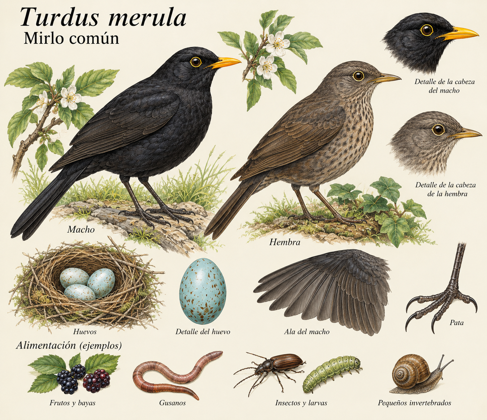

¿Qué es un mirlo?
El mirlo común (Turdus merula) es un ave muy conocida que podemos encontrar en bosques, parques, jardines y zonas urbanas.
El macho tiene un plumaje negro y un característico pico amarillo o anaranjado. La hembra presenta un plumaje de color pardo.

Características
- Es un ave de tamaño mediano.
- El macho tiene el plumaje negro.
- Tiene un pico amarillo o anaranjado.
- La hembra presenta un plumaje pardo.
- Es frecuente encontrarlo en jardines y parques.
- Su canto es característico y melodioso.
Alimentación
El mirlo es un ave omnívora. Su alimentación puede incluir:
- Frutos y bayas.
- Insectos y larvas.
- Gusanos.
- Pequeños invertebrados.
- Semillas.
Curiosidades
El mirlo suele cantar desde ramas, tejados o antenas. Su canto es uno de los sonidos más característicos de nuestros jardines durante la primavera.
También podemos observarlo caminando por el suelo mientras busca pequeños animales entre las hojas y la vegetación.